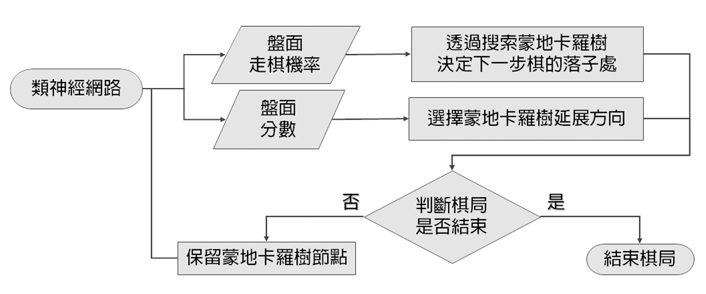
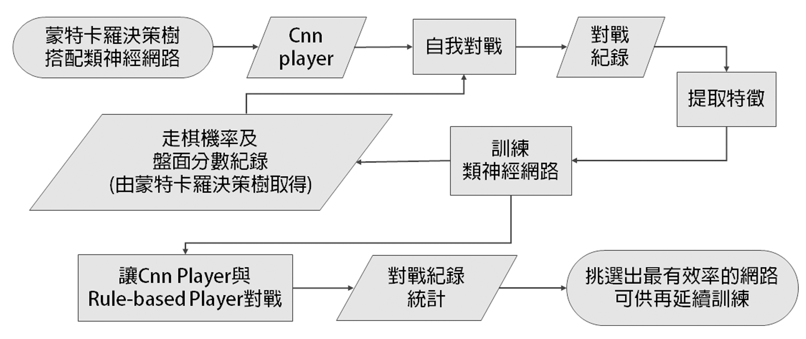
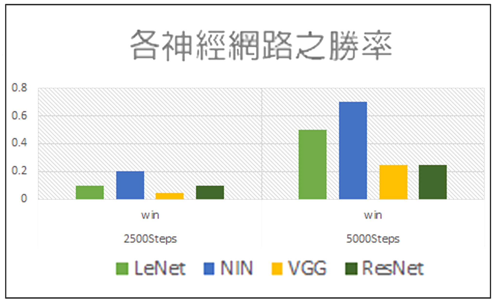
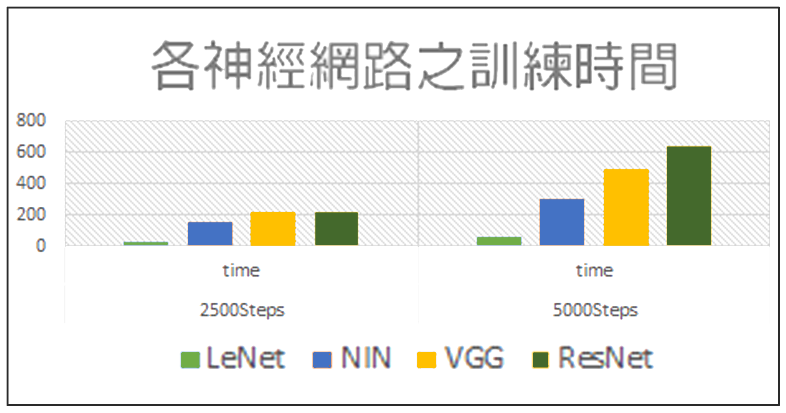
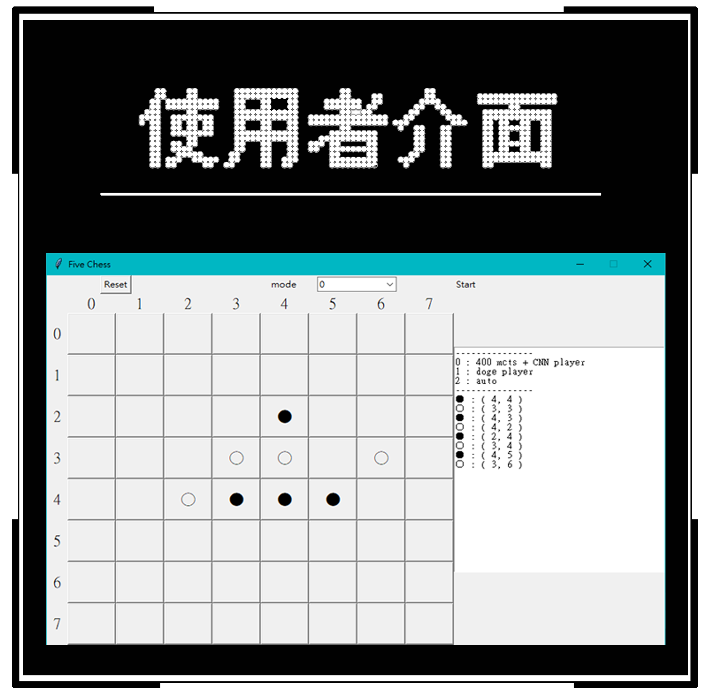

基於深度學習的五子棋AI
簡介
AI時代來臨，各種機器學習、深度學習、神經網路等等技術迎面而來，因此我們專題選擇以五子棋作為展示成果的媒介，深入研究不同種CNN之間的效率以及其中運作的原理。
利用蒙地卡羅樹搭配類神經網路產生一個虛擬玩家，
並使用自我對戰或已有的賽局的紀錄，訓練類神經網路， 再放置到各個不同的類神經網路結構裡去做測試。
最終以我們編寫出懂得五子棋基礎規規則的Rule-base player當作強度基準，透過對戰方式，找出訓練成果最好的網路。
對戰架構
利用類神經網路產生的分數與機率，搭配蒙地卡羅樹，來找到勝率最高的棋步。 並將樹上的節點保留下來，直到這場遊戲結束。
訓練架構
蒙地卡羅樹搭配類神經網路產生一個虛擬玩家。 使用自我對戰的紀錄，訓練類神經網路。最終與Rule-based player對戰，找出訓練效率最好的網路。

實作結果
整理CNN Player與Rule-based player對戰結果，紀錄分別至2500步及5000步為止的勝率及時間。


如圖表所示，我們可以得知勝率較為出色的網路為NIN；而訓練時間最短、效率最高的網路則為LeNet。
使用者介面
製作可以讓人和AI互動的圖形化介面，可以選擇跟最初，或是訓練出來的AI對抗。亦可以選擇觀看AI的自我對戰。
右側的文字欄，則顯示到目前為止的紀錄，包括下棋的順序，位置，勝者。
